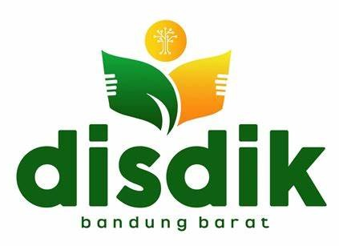
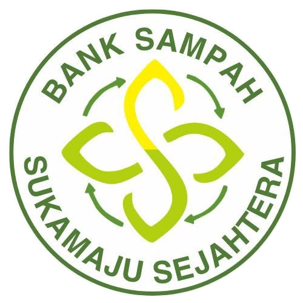
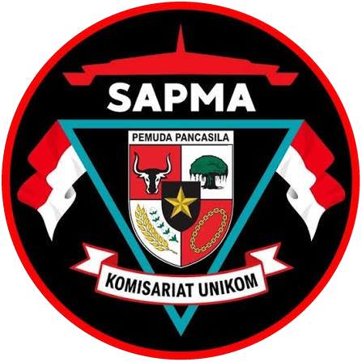
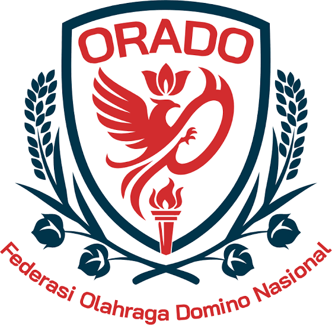
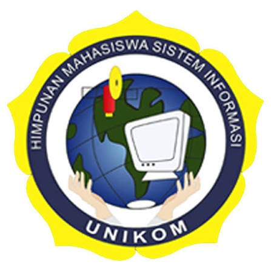
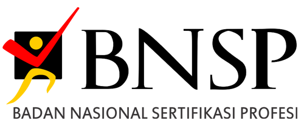
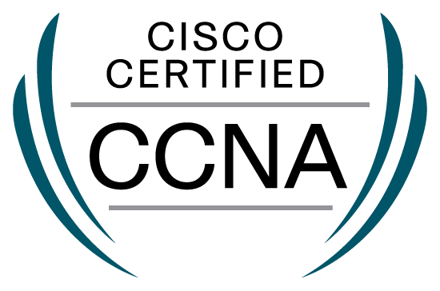

MIRWANKHOLID
Sarjana Sistem Informasi UNIKOM yang memadukan rekayasa aplikasi web enterprise dengan analitik data terapan bersertifikasi BNSP.
SISTEM BERSIH UNTUK MASALAH OPERASIONAL RIIL.
Menjembatani keahlian rekayasa aplikasi web modern full-stack dan analitik data terakreditasi nasional untuk memecahkan hambatan operasional nyata.
Saya adalah lulusan Sarjana Sistem Informasi dari Universitas Komputer Indonesia (UNIKOM). Fokus utama saya menjembatani rekayasa aplikasi web modern full-stack dan analitik data terakreditasi nasional (BNSP SKKNI).
Baik dalam mendigitisasi alur Kenaikan Gaji Berkala (KGB) guru untuk Dinas Pendidikan Kab. Bandung Barat, membangun sistem timbangan digital & tabungan Bank Sampah Sukamaju Sejahtera, maupun memodelkan intelijen bisnis lewat statistik data, saya memprioritaskan arsitektur bersih, integritas basis data (3NF), dan dampak operasional yang terukur.
Di luar kode teknis, amanah kepemimpinan sebagai Ketua dan Wakil Ketua di berbagai organisasi tingkat universitas hingga daerah mengasah kepemimpinan eksekutif, komunikasi lintas fungsi, dan manajemen proyek yang berorientasi hasil nyata.
Setiap baris kode, kueri database, dan rancangan antarmuka dirancang untuk meminimalkan friksi kerja pengguna, menjaga keamanan akses (RBAC), serta menyajikan data valid untuk keputusan manajemen tingkat tinggi.
SOLUSI TEKNOLOGI YANG TERUJI.
Bukan sekadar template tutorial. Setiap sistem dibangun dari identifikasi masalah bisnis nyata: otomatisasi birokrasi pemerintahan, digitalisasi komunitas, tata kelola armada, hingga validasi presensi geofence.
STACK TEKNOLOGI & METODOLOGI.
Penguasaan menyeluruh dari lapisan antarmuka pengguna, arsitektur server MVC, normalisasi basis data (3NF), hingga pemodelan statistik data.
FULL-STACK WEB
ENGINEERING & APIDATA ANALYTICS & BI
SKKNI & MODELINGDATABASE & ARCH
RELATIONAL & SADLEADERSHIP & STRATEGY
ORGANISASI & EKSEKUSIPENGALAMAN KERJA.
Pengembangan arsitektur web modern dan sistem informasi berbasis produksi untuk instansi pemerintahan serta institusi komunitas riil.

Web Developer
Membangun subsistem PETADIK untuk otomatisasi verifikasi Kenaikan Gaji Berkala (KGB) ribuan tenaga pendidik se-KBB.
- Membangun modul KGB guru terintegrasi untuk ribuan tenaga pendidik di lingkungan Dinas Pendidikan Kabupaten Bandung Barat.
- Mengotomatiskan alur verifikasi berkas berjenjang dan kalkulasi periode 2 tahunan, menggantikan proses manual tumpukan berkas fisik.
- Mempercepat turnaround penerbitan SK KGB resmi siap unduh/cetak serta meniadakan antrean fisik operator sekolah ke kantor dinas.

Web Developer
Memimpin perancangan dan pengembangan aplikasi web resmi serta sistem manajemen digital Bank Sampah Sukamaju Sejahtera untuk menunjang skripsi dan operasional warga.
- Merancang dan membangun website lengkap untuk mengelola operasional bank sampah, informasi layanan, dan alur transaksi setoran warga.
- Mengembangkan antarmuka pengguna yang intuitif dan mudah diakses oleh warga dari berbagai tingkat literasi digital.
- Menyusun skema basis data relasional (3NF) dan tata letak responsif untuk meningkatkan konsistensi data dan efisiensi pelaporan.
PENGALAMAN ORGANISASI.
Perjalanan kepemimpinan eksekutif, koordinasi kader aktif, serta tata kelola program strategis lintas organisasi kampus hingga tingkat regional.

Ketua
Memimpin organisasi mahasiswa, menuntaskan skripsi sistem Bank Sampah Sukamaju Sejahtera, dan meraih sertifikasi profesi BNSP.
- Mengoordinasikan ratusan anggota aktif dan menyusun rencana strategis program kemahasiswaan berbasis dampak sosial.
- Mengawasi alokasi anggaran, manajemen logistik kegiatan akbar, dan diplomasi antarlembaga universitas.

Kepala Divisi Diklat
Menyusun standarisasi kurikulum pelatihan dan pembinaan atlet olahraga domino Kota Bandung.
- Menyusun metrik evaluasi performa atlet dan merancang modul latihan berbasis analisis statistik permainan.
- Mengelola logistik kontingen dan menyupervisi turnamen seleksi daerah.
Wakil Ketua
Mengordinasikan program kaderisasi pemuda anti narkoba dan menginisiasi sistem database keanggotaan terintegrasi.
- Mengoordinasikan ratusan kader pemuda dan menyelenggarakan workshop interaktif pola hidup sehat di berbagai kecamatan.
- Membangun kemitraan strategis dengan dinas terkait dan koalisi kepemudaan daerah.

Wakil Ketua
Memimpin departemen internal, menyukseskan program kerja akademik himpunan, dan meraih sertifikasi jaringan Cisco.
- Menyelenggarakan seminar teknologi berskala nasional, workshop pemrograman, dan pembinaan mahasiswa baru.
- Melakukan evaluasi triwulanan yang meningkatkan keaktifan anggota dan sinergi antar-divisi.
PENDIDIKAN TINGGI & PENGHARGAAN.
Pendidikan formal berorientasi sains komputer dan teknologi informasi dengan rekam jejak akademik predikat kelulusan dengan pujian tinggi (High Distinction).
Universitas Komputer Indonesia
Aktif dalam proyek riset perangkat lunak, inisiatif rekayasa web, dan kurikulum tingkat lanjut meliputi full-stack web engineering, arsitektur basis data relasional, dan data analytics. Menyelesaikan skripsi implementasi sistem bank sampah digital terintegrasi berbasis Next.js dan Prisma MySQL.
// Kemahiran Bahasa (Language Proficiency)
// Penghargaan Akademik
High Distinction Graduate
Mempertahankan prestasi akademik konsisten pada persentil teratas sepanjang 8 semester di Program Studi Sistem Informasi UNIKOM.
SERTIFIKASI TERVERIFIKASI.
Pengakuan kompetensi formal berstandar nasional (BNSP SKKNI) dan global (IBM SkillsBuild & Cisco Networking Academy). Klik kartu untuk membuka dokumen verifikasi lengkap.

Analis Data Madya (Associate Data Analyst)
Badan Nasional Sertifikasi Profesi via LSP Informatika · Berlaku s/d 2029
Data Classification & Summarization
Machine Learning, Feature Engineering & Python Exploration · Juli 2025

CCNAv7: Switching, Routing, and Wireless Essentials
VLANs, Inter-VLAN Routing, STP, EtherChannel & WLC · Agustus 2024
CCNAv7: Introduction to Networks
IPv4/IPv6 Subnetting, OSI/TCP-IP & Security Basics · Februari 2024
"KODE BERKUALITAS MENGUBAH KOMPLEKSITAS MENJADI EFISIENSI."
— REKAYASA SISTEM INFORMASI · UNIKOM BANDUNGMARI MEMBANGUN SOLUSI BERSAMA.
Terbuka untuk posisi Full-Stack Developer, Data Analyst, maupun kontrak proyek strategis. Diskusikan tantangan sistem Anda — respon maksimal dalam 1×24 jam.
- Arsitektur Web Scalable (Laravel, React, Next.js, REST API)FULL-STACK
- Analitik Data & Business Intelligence (Python, Power BI, SQL 3NF)SKKNI BNSP
- Integrasi Sensor Geofence, Kamera & Payment GatewayGEOFENCE
- Kepemimpinan Eksekutif & Kolaborasi Lintas FungsiLEADERSHIP
PESAN TERCATAT.
Terima kasih atas minat Anda. Anda juga dapat melanjutkan chat langsung via WhatsApp untuk diskusi instan sekarang.